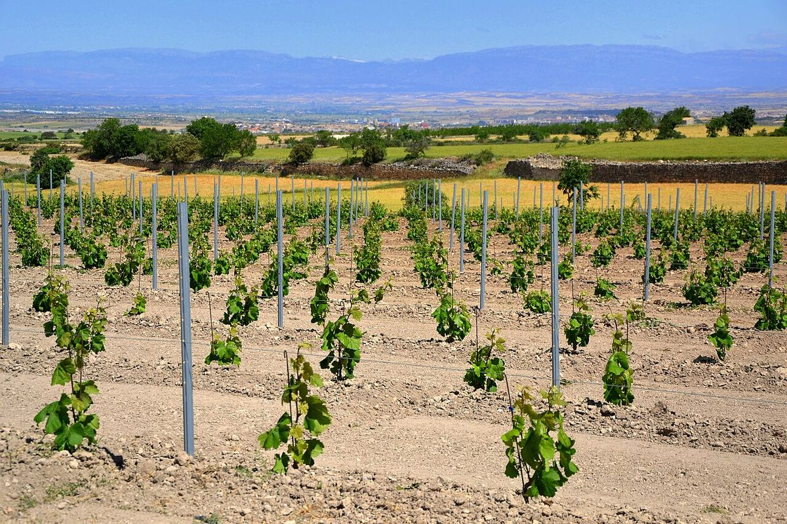

BLANC
Costers del Segre est une dénomination d'origine de l'intérieur de la Catalogne, principalement dans la province de Lleida, formée de plusieurs sous-zones dispersées le long du Segre et de ses affluents. Son climat continental et sec donne une grande variété de rouges, de blancs et de rosés.

La viticulture sur les terres de Lleida a des racines anciennes, mais l'histoire moderne du Costers del Segre est liée au domaine de Raimat, acquis au début du XXe siècle par la famille Raventós, propriétaire de Codorníu. Dans une zone alors aride, l'arrivée de l'eau du canal d'Aragon et de Catalogne permit de transformer la terre et de planter de la vigne, d'abord avec des cépages traditionnels, puis avec des cépages internationaux comme le cabernet-sauvignon, le merlot et le chardonnay. À partir de cette expérience et de l'activité de coopératives et de bodegas familiales dans d'autres comarques, la dénomination d'origine fut constituée ; elle réunit des zones viticoles très différentes les unes des autres.
L'appellation ne forme pas un territoire continu, mais un ensemble de zones séparées dans la province de Lleida, avec quelques extensions dans celle de Tarragone. Parmi ses sous-zones figurent Raimat, dans la plaine à l'ouest de Lleida ; Segrià, autour de la capitale provinciale ; Les Garrigues, au sud-est, plus sèche et connue aussi pour son huile d'olive ; Valls del Riu Corb ; Artesa de Segre, au nord ; et Pallars Jussà, dans les Prépyrénées, avec des vignes plus en altitude.
Le climat est continental et sec, avec peu de pluie, des hivers froids, souvent marqués par des brouillards persistants dans la plaine, et des étés chauds. Dans les zones basses, l'irrigation a été déterminante pour le développement du vignoble, tandis que dans les sous-zones de montagne, comme le Pallars Jussà, l'altitude apporte des températures plus fraîches et une plus grande amplitude thermique, qui favorise l'acidité et les arômes.
Dominent des sols calcaires, de texture limoneuse ou sableuse, pauvres en matière organique et bien drainés, avec des variations notables d'une sous-zone à l'autre.
La diversité des conditions se traduit par une large palette de cépages. Parmi les rouges, on cultive le tempranillo (ull de llebre), le grenache, le cabernet-sauvignon, le merlot, la syrah, le pinot noir, le monastrell et le trepat, ce dernier associé aux rosés de certaines zones. Parmi les blancs, le macabeo, le parellada, le xarel·lo, le chardonnay, le grenache blanc, le sauvignon blanc et le riesling. On élabore des rouges jeunes et élevés, souvent avec des cépages internationaux, des blancs frais ou fermentés en barrique et des rosés. Une partie de la production sert aussi à l'élaboration d'effervescents, certaines communes étant incluses dans la zone du Cava.